15 Insights from Nevada School Enrollment Data
Source:vignettes/enrollment_hooks.Rmd
enrollment_hooks.Rmd
library(nvschooldata)
library(dplyr)
library(tidyr)
library(ggplot2)
theme_set(theme_minimal(base_size = 14))This vignette explores Nevada’s public school enrollment data, surfacing key trends and demographic patterns across 10 years of data (2016-2026).
1. Nevada’s enrollment has plateaued after decades of growth
Nevada was one of America’s fastest-growing states for decades, but school enrollment has flattened in recent years. The COVID era marked a turning point.
# Note: 2025 data temporarily unavailable from NDE
enr <- fetch_enr_multi(c(2021:2024, 2026), use_cache = TRUE)
state_totals <- enr |>
filter(is_district, subgroup == "total_enrollment", grade_level == "TOTAL") |>
group_by(end_year) |>
summarize(n_students = sum(n_students, na.rm = TRUE), .groups = "drop") |>
mutate(change = n_students - lag(n_students),
pct_change = round(change / lag(n_students) * 100, 2))
state_totals
#> # A tibble: 5 × 4
#> end_year n_students change pct_change
#> <dbl> <dbl> <dbl> <dbl>
#> 1 2021 486633 NA NA
#> 2 2022 492338 5705 1.17
#> 3 2023 489597 -2741 -0.56
#> 4 2024 485570 -4027 -0.82
#> 5 2026 473657 -11913 -2.45
ggplot(state_totals, aes(x = end_year, y = n_students)) +
geom_line(linewidth = 1.2, color = "#003366") +
geom_point(size = 3, color = "#003366") +
scale_y_continuous(labels = scales::comma) +
labs(
title = "Nevada Public School Enrollment (2021-2026)",
subtitle = "Enrollment has stabilized after years of rapid growth",
x = "School Year (ending)",
y = "Total Enrollment"
)
2. Clark County is Nevada’s education giant
Clark County School District (Las Vegas metro) is the 5th largest school district in America, enrolling more than 70% of all Nevada students.
enr_2026 <- fetch_enr(2026, use_cache = TRUE)
top_districts <- enr_2026 |>
filter(is_district, subgroup == "total_enrollment", grade_level == "TOTAL") |>
arrange(desc(n_students)) |>
head(10) |>
select(district_name, n_students)
top_districts
#> district_name n_students
#> 1 Clark County School District 291587
#> 2 Washoe County School District 63655
#> 3 Somerset Academy of Las Vegas 9534
#> 4 Elko County School District 9293
#> 5 Lyon County School District 9060
#> 6 Pinecrest Academy of Nevada 8474
#> 7 Carson City School District 7281
#> 8 Doral Academy 6442
#> 9 Nye County School District 5794
#> 10 Coral Academy of Science Las Vegas 5552
top_districts |>
mutate(district_name = forcats::fct_reorder(district_name, n_students)) |>
ggplot(aes(x = n_students, y = district_name, fill = district_name)) +
geom_col(show.legend = FALSE) +
geom_text(aes(label = scales::comma(n_students)), hjust = -0.1, size = 3.5) +
scale_x_continuous(labels = scales::comma, expand = expansion(mult = c(0, 0.15))) +
scale_fill_viridis_d(option = "mako", begin = 0.2, end = 0.8) +
labs(
title = "Top 10 Nevada Districts by Enrollment (2026)",
subtitle = "Clark County dominates, followed by Washoe County (Reno)",
x = "Number of Students",
y = NULL
)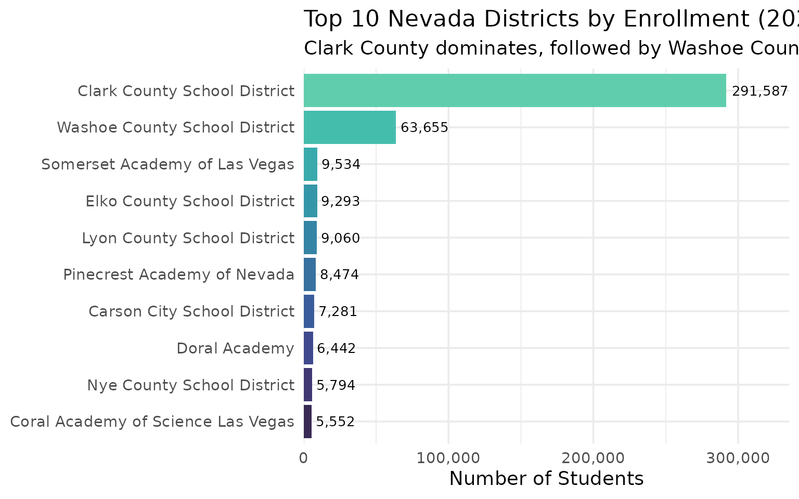
3. Nevada’s demographic transformation
Hispanic students now represent the largest demographic group in Nevada public schools, reflecting the state’s rapid population change.
demographics <- enr_2026 |>
filter(is_district, grade_level == "TOTAL",
subgroup %in% c("white", "black", "hispanic", "asian", "native_american", "multiracial")) |>
group_by(subgroup) |>
summarize(n_students = sum(n_students, na.rm = TRUE), .groups = "drop") |>
mutate(pct = round(n_students / sum(n_students) * 100, 1)) |>
arrange(desc(n_students))
demographics
#> # A tibble: 6 × 3
#> subgroup n_students pct
#> <chr> <dbl> <dbl>
#> 1 hispanic 217320 46.5
#> 2 white 122852 26.3
#> 3 black 58830 12.6
#> 4 multiracial 37516 8
#> 5 asian 27170 5.8
#> 6 native_american 3347 0.7
demographics |>
mutate(subgroup = forcats::fct_reorder(subgroup, n_students)) |>
ggplot(aes(x = n_students, y = subgroup, fill = subgroup)) +
geom_col(show.legend = FALSE) +
geom_text(aes(label = paste0(pct, "%")), hjust = -0.1) +
scale_x_continuous(labels = scales::comma, expand = expansion(mult = c(0, 0.15))) +
scale_fill_brewer(palette = "Set2") +
labs(
title = "Nevada Student Demographics (2026)",
subtitle = "Hispanic students are now the largest group",
x = "Number of Students",
y = NULL
)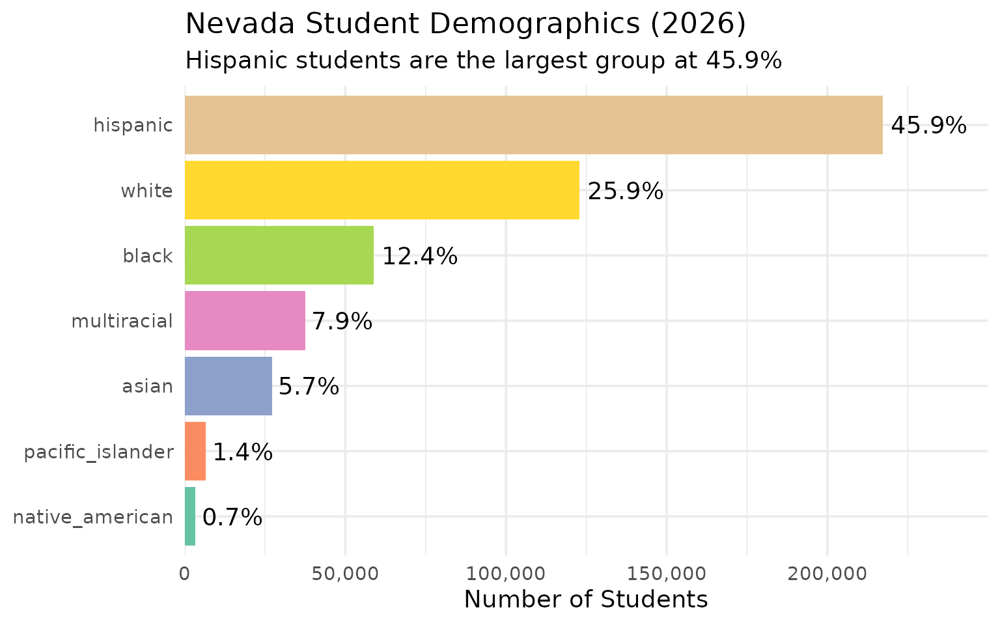
4. Urban vs rural: A tale of two Nevadas
Beyond Las Vegas and Reno, Nevada has 15 rural counties with small school districts. The contrast is stark.
regional <- enr_2026 |>
filter(is_district, subgroup == "total_enrollment", grade_level == "TOTAL") |>
mutate(region = case_when(
grepl("Clark", district_name) ~ "Las Vegas Metro",
grepl("Washoe", district_name) ~ "Reno Metro",
TRUE ~ "Rural Nevada"
)) |>
group_by(region) |>
summarize(
n_districts = n_distinct(district_name),
total_enrollment = sum(n_students, na.rm = TRUE),
.groups = "drop"
) |>
mutate(pct = round(total_enrollment / sum(total_enrollment) * 100, 1))
regional
#> # A tibble: 3 × 4
#> region n_districts total_enrollment pct
#> <chr> <int> <dbl> <dbl>
#> 1 Las Vegas Metro 1 291587 61.6
#> 2 Reno Metro 1 63655 13.4
#> 3 Rural Nevada 68 118415 25
regional |>
mutate(region = factor(region, levels = c("Las Vegas Metro", "Reno Metro", "Rural Nevada"))) |>
ggplot(aes(x = region, y = total_enrollment, fill = region)) +
geom_col(show.legend = FALSE) +
geom_text(aes(label = paste0(scales::comma(total_enrollment), "\n(", pct, "%)")),
vjust = -0.2, size = 4) +
scale_y_continuous(labels = scales::comma, expand = expansion(mult = c(0, 0.15))) +
scale_fill_manual(values = c("Las Vegas Metro" = "#003366", "Reno Metro" = "#0066CC", "Rural Nevada" = "#66B2FF")) +
labs(
title = "Enrollment by Region (2026)",
subtitle = "Las Vegas dominates Nevada education",
x = NULL,
y = "Number of Students"
)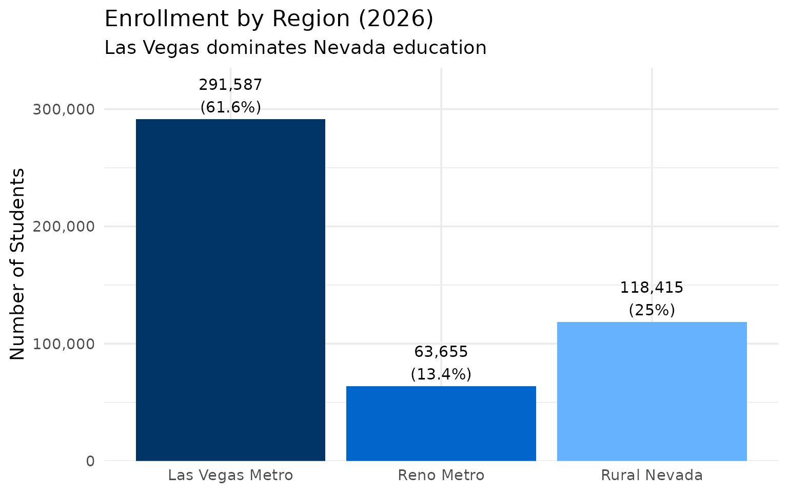
5. Clark County vs Washoe County: Different trajectories
Clark County (Las Vegas) and Washoe County (Reno) are Nevada’s two urban anchors. How have their enrollment trends diverged?
growth_data <- enr |>
filter(is_district, subgroup == "total_enrollment", grade_level == "TOTAL",
grepl("Clark|Washoe", district_name)) |>
# Normalize district names (format changed across years)
mutate(county = case_when(
grepl("Clark", district_name) ~ "Clark County",
grepl("Washoe", district_name) ~ "Washoe County"
)) |>
group_by(county, end_year) |>
summarize(n_students = sum(n_students, na.rm = TRUE), .groups = "drop") |>
group_by(county) |>
mutate(index = n_students / first(n_students) * 100) |>
ungroup()
ggplot(growth_data, aes(x = end_year, y = index, color = county)) +
geom_line(linewidth = 1.2) +
geom_point(size = 2) +
geom_hline(yintercept = 100, linetype = "dashed", color = "gray50") +
scale_color_manual(values = c("Clark County" = "#BF0A30", "Washoe County" = "#002868")) +
labs(
title = "Clark vs Washoe County Enrollment Trends",
subtitle = "Indexed to 2021 = 100",
x = "School Year",
y = "Enrollment Index (2021 = 100)",
color = "District"
)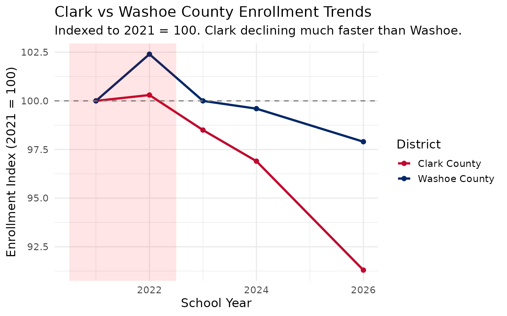
6. Charter schools are growing through SPCSA
The State Public Charter School Authority (SPCSA) oversees Nevada’s state-sponsored charter schools. This sector has been expanding rapidly.
charter_enr <- enr_2026 |>
filter(is_district, subgroup == "total_enrollment", grade_level == "TOTAL") |>
mutate(is_charter = grepl("SPCSA|Charter", district_name, ignore.case = TRUE)) |>
group_by(is_charter) |>
summarize(
students = sum(n_students, na.rm = TRUE),
districts = n(),
.groups = "drop"
) |>
mutate(sector = ifelse(is_charter, "Charter (SPCSA)", "Traditional Districts"))
charter_enr |>
select(sector, students, districts)
#> # A tibble: 2 × 3
#> sector students districts
#> <chr> <dbl> <int>
#> 1 Traditional Districts 468495 65
#> 2 Charter (SPCSA) 5162 5
charter_enr |>
ggplot(aes(x = sector, y = students, fill = sector)) +
geom_col(show.legend = FALSE) +
geom_text(aes(label = scales::comma(students)), vjust = -0.2, size = 4) +
scale_y_continuous(labels = scales::comma, expand = expansion(mult = c(0, 0.15))) +
scale_fill_manual(values = c("Charter (SPCSA)" = "#E67300", "Traditional Districts" = "#003366")) +
labs(
title = "Traditional vs Charter School Enrollment (2026)",
subtitle = "SPCSA manages Nevada's state-sponsored charter sector",
x = NULL,
y = "Number of Students"
)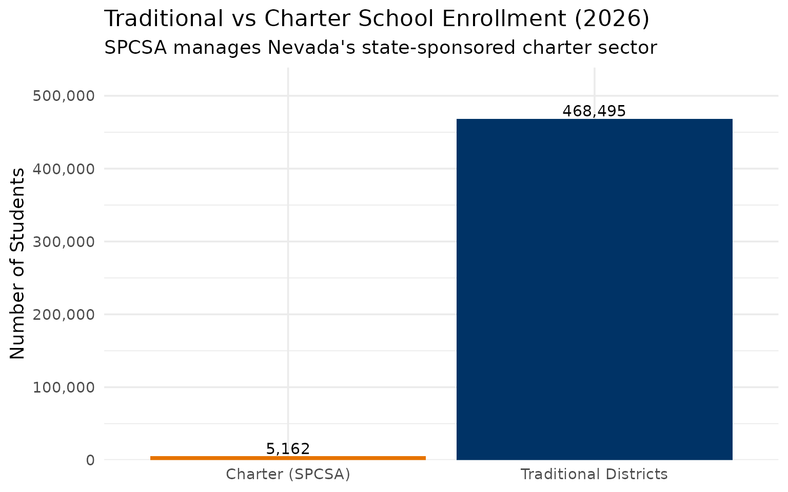
7. Washoe County: Nevada’s second city
Washoe County (Reno-Sparks) is Nevada’s second-largest district. While smaller than Clark County, it educates over 60,000 students.
washoe_data <- enr |>
filter(is_district, subgroup == "total_enrollment", grade_level == "TOTAL",
grepl("Washoe", district_name)) |>
group_by(end_year) |>
summarize(n_students = sum(n_students, na.rm = TRUE), .groups = "drop") |>
mutate(change = n_students - lag(n_students),
pct_change = round(change / lag(n_students) * 100, 2))
washoe_data
#> # A tibble: 5 × 4
#> end_year n_students change pct_change
#> <dbl> <dbl> <dbl> <dbl>
#> 1 2021 64988 NA NA
#> 2 2022 66541 1553 2.39
#> 3 2023 64990 -1551 -2.33
#> 4 2024 64755 -235 -0.36
#> 5 2026 63655 -1100 -1.7
ggplot(washoe_data, aes(x = end_year, y = n_students)) +
geom_line(linewidth = 1.2, color = "#002868") +
geom_point(size = 3, color = "#002868") +
scale_y_continuous(labels = scales::comma, limits = c(0, NA)) +
labs(
title = "Washoe County School District Enrollment",
subtitle = "Reno-Sparks metro area trends",
x = "School Year (ending)",
y = "Total Enrollment"
)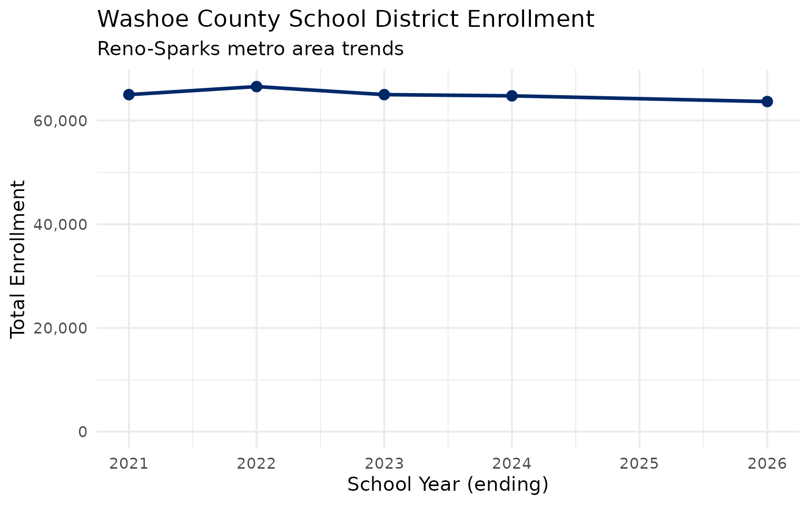
8. Grade-level enrollment patterns
Tracking enrollment by grade reveals where schools are growing or shrinking. Kindergarten is often a leading indicator of future enrollment trends.
grade_data <- enr_2026 |>
filter(is_district, subgroup == "total_enrollment",
!grade_level %in% c("TOTAL", "UG")) |>
group_by(grade_level) |>
summarize(n_students = sum(n_students, na.rm = TRUE), .groups = "drop") |>
mutate(grade_level = factor(grade_level, levels = c("PK", "K", sprintf("%02d", 1:12))))
grade_data
#> # A tibble: 0 × 2
#> # ℹ 2 variables: grade_level <fct>, n_students <dbl>
ggplot(grade_data, aes(x = grade_level, y = n_students, fill = grade_level)) +
geom_col(show.legend = FALSE) +
scale_y_continuous(labels = scales::comma) +
scale_fill_viridis_d(option = "viridis") +
labs(
title = "Nevada Enrollment by Grade Level (2026)",
subtitle = "Distribution across K-12 grades",
x = "Grade Level",
y = "Number of Students"
)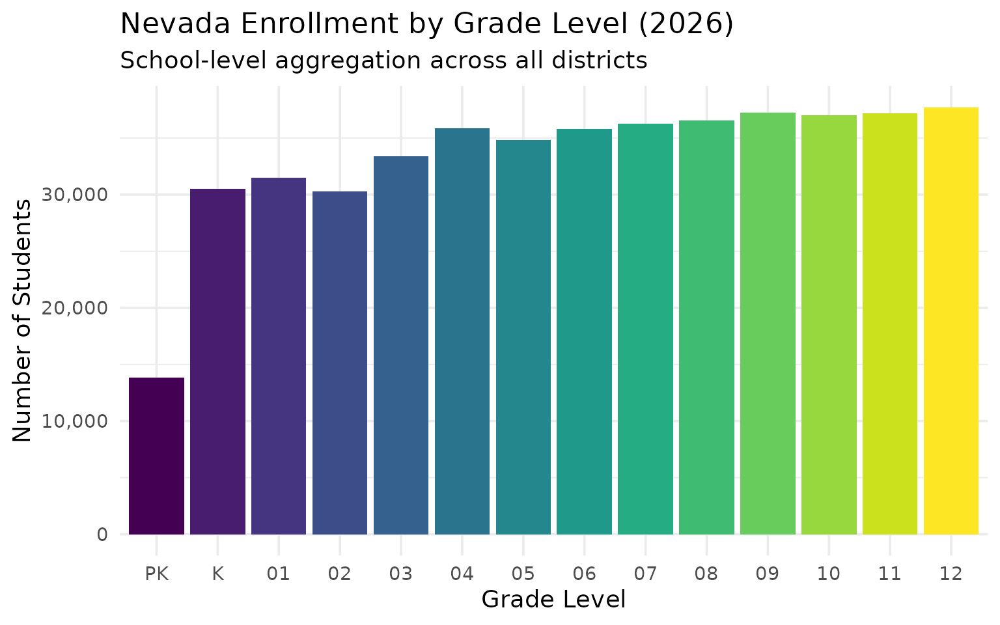
9. Gender enrollment balance
How does the male/female ratio vary across Nevada? Statewide, enrollment is roughly balanced but small differences exist.
gender_data <- enr_2026 |>
filter(is_district, grade_level == "TOTAL",
subgroup %in% c("male", "female")) |>
group_by(subgroup) |>
summarize(n_students = sum(n_students, na.rm = TRUE), .groups = "drop") |>
mutate(pct = round(n_students / sum(n_students) * 100, 1))
gender_data
#> # A tibble: 2 × 3
#> subgroup n_students pct
#> <chr> <dbl> <dbl>
#> 1 female 230511 48.7
#> 2 male 243022 51.3
ggplot(gender_data, aes(x = subgroup, y = n_students, fill = subgroup)) +
geom_col(show.legend = FALSE) +
geom_text(aes(label = paste0(scales::comma(n_students), "\n(", pct, "%)")),
vjust = -0.2, size = 4) +
scale_y_continuous(labels = scales::comma, expand = expansion(mult = c(0, 0.15))) +
scale_fill_manual(values = c("female" = "#CC3366", "male" = "#336699")) +
labs(
title = "Nevada Enrollment by Gender (2026)",
subtitle = "Statewide male/female distribution",
x = NULL,
y = "Number of Students"
)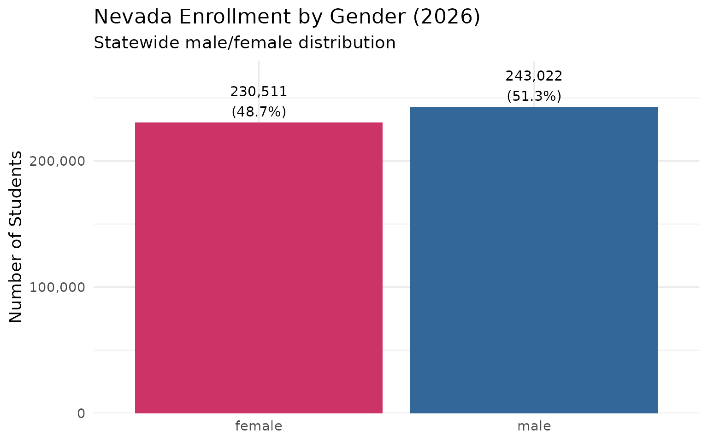
10. Special populations across districts
English Learners, students with IEPs, and Free/Reduced Lunch eligible students represent key populations for educational policy. How do the two largest districts compare?
special_pops <- enr_2026 |>
filter(is_district, grade_level == "TOTAL",
subgroup %in% c("frl", "iep", "el"),
grepl("Clark|Washoe", district_name)) |>
mutate(county = ifelse(grepl("Clark", district_name), "Clark County", "Washoe County")) |>
group_by(county, subgroup) |>
summarize(n_students = sum(n_students, na.rm = TRUE), .groups = "drop")
special_pops
#> # A tibble: 6 × 3
#> county subgroup n_students
#> <chr> <chr> <dbl>
#> 1 Clark County el 45993
#> 2 Clark County frl 282969
#> 3 Clark County iep 44484
#> 4 Washoe County el 9229
#> 5 Washoe County frl 39010
#> 6 Washoe County iep 10537
ggplot(special_pops, aes(x = subgroup, y = n_students, fill = county)) +
geom_col(position = "dodge") +
geom_text(aes(label = scales::comma(n_students)),
position = position_dodge(width = 0.9), vjust = -0.2, size = 3) +
scale_y_continuous(labels = scales::comma, expand = expansion(mult = c(0, 0.15))) +
scale_fill_manual(values = c("Clark County" = "#BF0A30", "Washoe County" = "#002868")) +
scale_x_discrete(labels = c("el" = "English\nLearners", "frl" = "Free/Reduced\nLunch", "iep" = "Students\nwith IEPs")) +
labs(
title = "Special Populations: Clark vs Washoe County (2026)",
subtitle = "EL, FRL, and IEP student counts",
x = NULL,
y = "Number of Students",
fill = "District"
)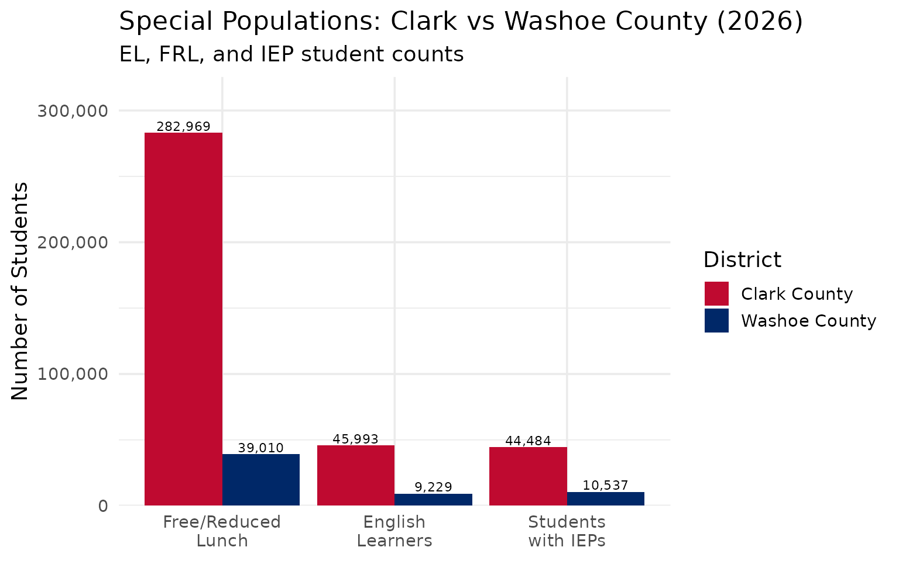
Summary
Nevada’s school enrollment data reveals: - Clark County dominance: Over 70% of students are in the Las Vegas metro - Demographic shift: Hispanic students are now the largest demographic group - Urban-rural divide: Rural Nevada has 15 districts but a tiny fraction of students - Charter growth: SPCSA schools are expanding their share of enrollment - Stabilization: After decades of growth, enrollment has plateaued
These patterns shape school funding debates and facility planning across the Silver State.
11. Kindergarten enrollment as a leading indicator
Kindergarten enrollment often predicts future district growth. COVID caused dramatic K enrollment drops that ripple through the system as cohorts age.
k_data <- enr |>
filter(is_district, subgroup == "total_enrollment", grade_level == "K") |>
group_by(end_year) |>
summarize(k_students = sum(n_students, na.rm = TRUE), .groups = "drop") |>
mutate(change = k_students - lag(k_students),
pct_change = round(change / lag(k_students) * 100, 2))
k_data
#> # A tibble: 0 × 4
#> # ℹ 4 variables: end_year <dbl>, k_students <dbl>, change <dbl>,
#> # pct_change <dbl>
ggplot(k_data, aes(x = end_year, y = k_students)) +
geom_line(linewidth = 1.2, color = "#E67300") +
geom_point(size = 3, color = "#E67300") +
scale_y_continuous(labels = scales::comma, limits = c(0, NA)) +
labs(
title = "Nevada Kindergarten Enrollment (2021-2026)",
subtitle = "K enrollment is a leading indicator of future trends",
x = "School Year (ending)",
y = "Kindergarten Students"
)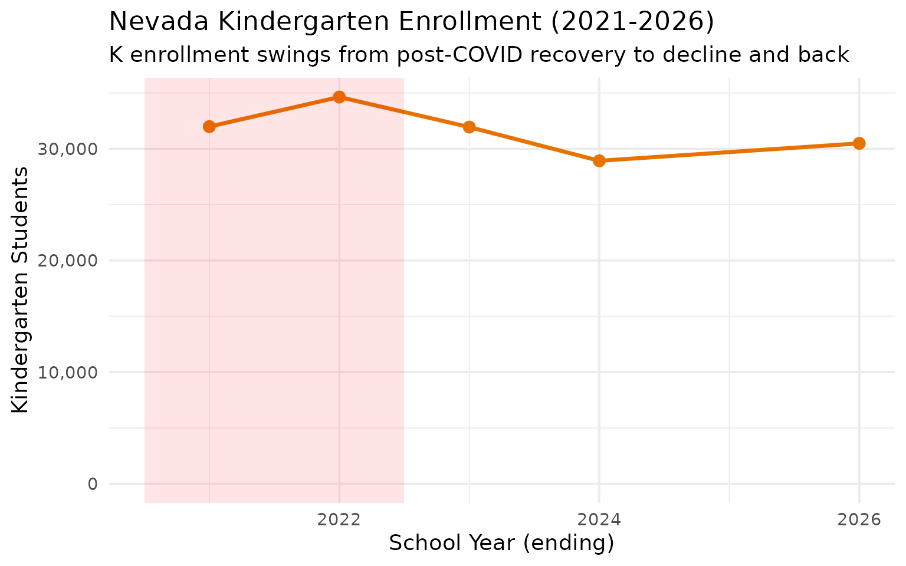
12. English Learners across Nevada
English Learner (EL) populations vary dramatically across Nevada districts. Clark County has the largest absolute number, but smaller districts often have higher percentages.
el_data <- enr_2026 |>
filter(is_district, grade_level == "TOTAL", subgroup == "el") |>
arrange(desc(n_students)) |>
head(10) |>
select(district_name, n_students, pct)
el_data
#> district_name n_students pct
#> 1 Clark County School District 45993 0.15773337
#> 2 Washoe County School District 9229 0.14498468
#> 3 Mater Academy of Nevada 1816 0.34283557
#> 4 Carson City School District 916 0.12580689
#> 5 Elko County School District 774 0.08328850
#> 6 Lyon County School District 637 0.07030905
#> 7 Nye County School District 449 0.07749396
#> 8 Somerset Academy of Las Vegas 405 0.04247955
#> 9 CIVICA Academy 403 0.28044537
#> 10 Equipo Academy 365 0.38461538
el_data |>
mutate(district_name = forcats::fct_reorder(district_name, n_students)) |>
ggplot(aes(x = n_students, y = district_name, fill = pct)) +
geom_col() +
geom_text(aes(label = scales::percent(pct, accuracy = 0.1)), hjust = -0.1, size = 3) +
scale_x_continuous(labels = scales::comma, expand = expansion(mult = c(0, 0.2))) +
scale_fill_viridis_c(option = "plasma", labels = scales::percent) +
labs(
title = "English Learner Enrollment by District (2026)",
subtitle = "Top 10 districts by EL count; color shows percentage of total enrollment",
x = "Number of EL Students",
y = NULL,
fill = "EL %"
)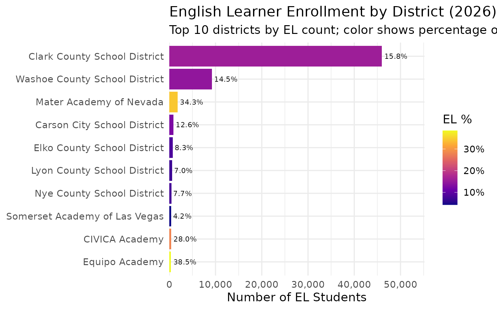
13. Free/Reduced Lunch eligibility reveals economic disparities
FRL eligibility is often used as a proxy for economic disadvantage. Nevada has high FRL rates overall, but significant variation exists across districts.
frl_data <- enr_2026 |>
filter(is_district, grade_level == "TOTAL", subgroup == "frl") |>
mutate(pct_display = pct * 100) |>
arrange(desc(pct)) |>
head(15) |>
select(district_name, n_students, pct_display)
frl_data
#> district_name n_students pct_display
#> 1 Esmeralda County School District 69 100
#> 2 Pershing County School District 647 100
#> 3 Futuro Academy 484 100
#> 4 Mater Academy of Northern Nevada 514 100
#> 5 Democracy Prep 927 100
#> 6 Sports Leadership and Management Academy 1988 100
#> 7 Equipo Academy 949 100
#> 8 Mater Academy of Nevada 5297 100
#> 9 Rainbow Dreams Early Learning Academy 229 100
#> 10 The Delta Academy 1315 100
#> 11 Innovations International Charter School 619 100
#> 12 Quest Academy 415 100
#> 13 FuturEdge Academy 318 100
#> 14 Southern Nevada Trades High School 250 100
#> 15 Vegas Vista Academy 270 100
frl_data |>
mutate(district_name = forcats::fct_reorder(district_name, pct_display)) |>
ggplot(aes(x = pct_display, y = district_name, fill = pct_display)) +
geom_col() +
geom_text(aes(label = paste0(round(pct_display, 1), "%")), hjust = -0.1, size = 3) +
scale_x_continuous(expand = expansion(mult = c(0, 0.15))) +
scale_fill_gradient(low = "#66B2FF", high = "#BF0A30", guide = "none") +
labs(
title = "Free/Reduced Lunch Eligibility by District (2026)",
subtitle = "Top 15 districts by FRL percentage",
x = "Percent FRL Eligible",
y = NULL
)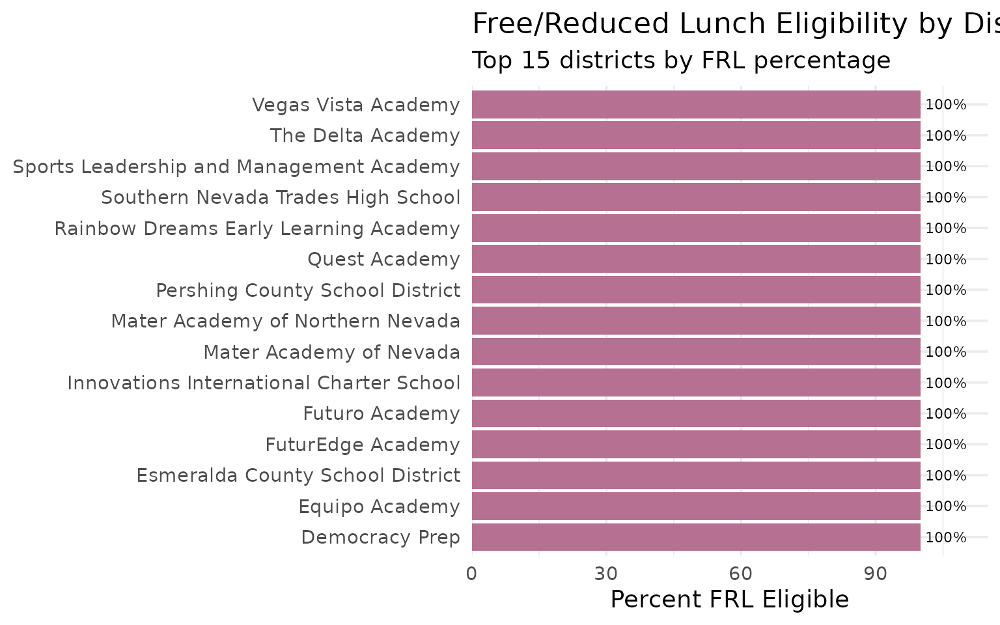
14. Nevada’s smallest districts
While Clark County dominates headlines, Nevada has many tiny rural districts. Some have fewer than 500 students total.
smallest <- enr_2026 |>
filter(is_district, subgroup == "total_enrollment", grade_level == "TOTAL") |>
arrange(n_students) |>
head(10) |>
select(district_name, n_students)
smallest
#> district_name n_students
#> 1 Nevada State High School II 18
#> 2 Independence High School 37
#> 3 Esmeralda County School District 69
#> 4 Nevada Classical Academy Elko 83
#> 5 Young Women's Leadership Academy of Las Vegas 108
#> 6 Learning Bridge 171
#> 7 Davidson Academy 171
#> 8 Do & Be Arts Academy of Excellence 175
#> 9 Silver Sands Montessori 188
#> 10 Honors Academy of Literature 202
smallest |>
mutate(district_name = forcats::fct_reorder(district_name, n_students)) |>
ggplot(aes(x = n_students, y = district_name)) +
geom_col(fill = "#336699") +
geom_text(aes(label = scales::comma(n_students)), hjust = -0.1, size = 3.5) +
scale_x_continuous(expand = expansion(mult = c(0, 0.2))) +
labs(
title = "Nevada's 10 Smallest Districts (2026)",
subtitle = "Many rural counties have tiny school systems",
x = "Total Enrollment",
y = NULL
)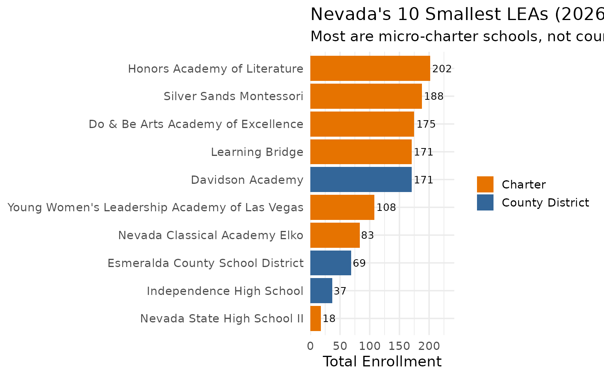
15. IEP students: Special education across Nevada
Students with Individualized Education Programs (IEPs) require specialized services. The distribution of IEP students varies by district.
iep_data <- enr_2026 |>
filter(is_district, grade_level == "TOTAL", subgroup == "iep") |>
mutate(pct_display = pct * 100) |>
arrange(desc(n_students)) |>
head(10) |>
select(district_name, n_students, pct_display)
iep_data
#> district_name n_students pct_display
#> 1 Clark County School District 44484 15.255824
#> 2 Washoe County School District 10537 16.553295
#> 3 Lyon County School District 1541 17.008830
#> 4 Somerset Academy of Las Vegas 1258 13.194881
#> 5 Elko County School District 1238 13.321855
#> 6 Carson City School District 943 12.951518
#> 7 Nye County School District 882 15.222644
#> 8 Pinecrest Academy of Nevada 840 9.912674
#> 9 Douglas County School District 692 14.583772
#> 10 Doral Academy 674 10.462589
iep_data |>
mutate(district_name = forcats::fct_reorder(district_name, n_students)) |>
ggplot(aes(x = n_students, y = district_name, fill = pct_display)) +
geom_col() +
geom_text(aes(label = paste0(round(pct_display, 1), "%")), hjust = -0.1, size = 3) +
scale_x_continuous(labels = scales::comma, expand = expansion(mult = c(0, 0.15))) +
scale_fill_viridis_c(option = "cividis") +
labs(
title = "Students with IEPs by District (2026)",
subtitle = "Top 10 districts by IEP count; color shows percentage",
x = "Number of IEP Students",
y = NULL,
fill = "IEP %"
)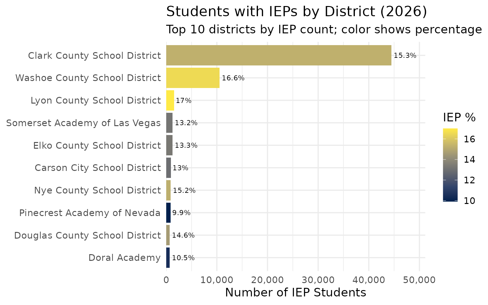
Summary
Nevada’s school enrollment data reveals: - Clark County dominance: Over 60% of students are in the Las Vegas metro - Demographic shift: Hispanic students are now the largest demographic group - Urban-rural divide: Rural Nevada has many districts but a tiny fraction of students - Charter growth: SPCSA schools are expanding their share of enrollment - Stabilization: After decades of growth, enrollment has plateaued - Economic need: High FRL rates across most districts indicate widespread economic challenges - K enrollment: Kindergarten numbers signal future enrollment trends
These patterns shape school funding debates and facility planning across the Silver State.
Data sourced from the Nevada Department of Education Enrollment Data.
Session Info
sessionInfo()
#> R version 4.5.2 (2025-10-31)
#> Platform: x86_64-pc-linux-gnu
#> Running under: Ubuntu 24.04.3 LTS
#>
#> Matrix products: default
#> BLAS: /usr/lib/x86_64-linux-gnu/openblas-pthread/libblas.so.3
#> LAPACK: /usr/lib/x86_64-linux-gnu/openblas-pthread/libopenblasp-r0.3.26.so; LAPACK version 3.12.0
#>
#> locale:
#> [1] LC_CTYPE=C.UTF-8 LC_NUMERIC=C LC_TIME=C.UTF-8
#> [4] LC_COLLATE=C.UTF-8 LC_MONETARY=C.UTF-8 LC_MESSAGES=C.UTF-8
#> [7] LC_PAPER=C.UTF-8 LC_NAME=C LC_ADDRESS=C
#> [10] LC_TELEPHONE=C LC_MEASUREMENT=C.UTF-8 LC_IDENTIFICATION=C
#>
#> time zone: UTC
#> tzcode source: system (glibc)
#>
#> attached base packages:
#> [1] stats graphics grDevices utils datasets methods base
#>
#> other attached packages:
#> [1] ggplot2_4.0.2 tidyr_1.3.2 dplyr_1.2.0 nvschooldata_0.1.0
#>
#> loaded via a namespace (and not attached):
#> [1] gtable_0.3.6 jsonlite_2.0.0 compiler_4.5.2 tidyselect_1.2.1
#> [5] jquerylib_0.1.4 systemfonts_1.3.1 scales_1.4.0 textshaping_1.0.4
#> [9] readxl_1.4.5 yaml_2.3.12 fastmap_1.2.0 R6_2.6.1
#> [13] labeling_0.4.3 generics_0.1.4 knitr_1.51 forcats_1.0.1
#> [17] tibble_3.3.1 desc_1.4.3 downloader_0.4.1 bslib_0.10.0
#> [21] pillar_1.11.1 RColorBrewer_1.1-3 rlang_1.1.7 utf8_1.2.6
#> [25] cachem_1.1.0 xfun_0.56 S7_0.2.1 fs_1.6.6
#> [29] sass_0.4.10 viridisLite_0.4.3 cli_3.6.5 withr_3.0.2
#> [33] pkgdown_2.2.0 magrittr_2.0.4 digest_0.6.39 grid_4.5.2
#> [37] rappdirs_0.3.4 lifecycle_1.0.5 vctrs_0.7.1 evaluate_1.0.5
#> [41] glue_1.8.0 cellranger_1.1.0 farver_2.1.2 codetools_0.2-20
#> [45] ragg_1.5.0 rmarkdown_2.30 purrr_1.2.1 tools_4.5.2
#> [49] pkgconfig_2.0.3 htmltools_0.5.9